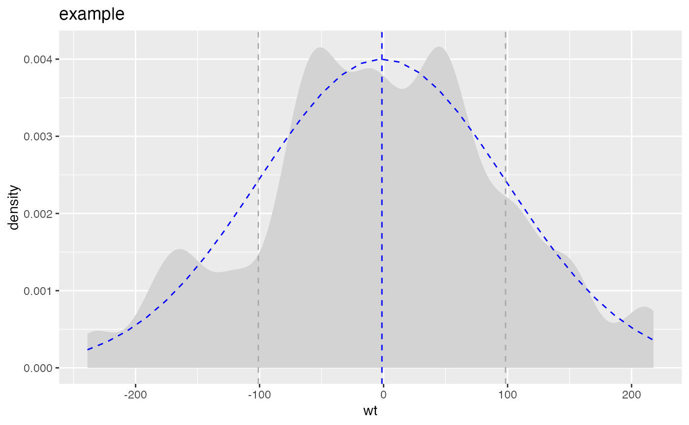

R/DistributionPlot.R
PlotDistDensityNormal.RdCompares empirical data to a normal distribution with the same mean and standard deviation.
PlotDistDensityNormal(
frm,
xvar,
title,
...,
adjust = 0.5,
curve_color = "lightgray",
normal_color = "blue",
mean_color = "blue",
sd_color = "darkgray"
)data frame to get values from
name of the independent (input or model) column in frame
title to place on plot
no unnamed argument, added to force named binding of later arguments.
passed to geom_density; controls smoothness of density plot
color for empirical density curve
color for theoretical matching normal
color of mean line
color for 1-standard deviation lines (can be NULL)
Plots the empirical density, the theoretical matching normal, the mean value, and plus/minus one standard deviation from the mean.
if (requireNamespace('data.table', quietly = TRUE)) {
# don't multi-thread during CRAN checks
data.table::setDTthreads(1)
}
set.seed(52523)
d <- data.frame(wt=100*rnorm(100))
PlotDistDensityNormal(d,'wt','example')

# # no sd lines
# PlotDistDensityNormal(d, 'wt', 'example', sd_color=NULL)